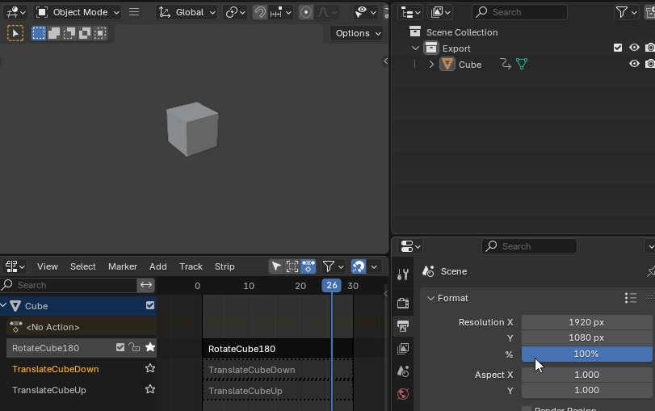

Importing Animations
Blender interchange can import a wide variety of animations authored in blender.
Importing animations requires that your animations are laid out in your blend file with the NLA (non-linear action) editor. Within the NLA each action should be on it's own track which can be done by recording an animation and pushing it down to the NLA track.
Pushing down animations to the NLA is very well explained in this video. It also explains pretty well what the NLA is and how it relates to the different animation editors in blender.
Note:
Skeletal Animations
Skeletal animations are owned by the skeleton when imported into unreal. This aligns with blender where you can see the animations clearly laid out under the owning parent rig.
Here you can see the animations laid out in the NLA on a skeletal mesh on blender's side. Each animation is on it's own track.
Here are the same animations in unreal engine after import. Each animation created should correspond to the name of the animation in blender. There is an option under Translator Settings that will let you append the rig name to the animation if you prefer a more verbose animation name.
Static Mesh Animations
Animations on meshes without a rig parent can also be imported to unreal as skeletal animations. The export process is nearly identical to skeletal animations.
Simply record you animations to a mesh in blender the same as with a skeletal mesh. The animations should show up under your scene collection and also the NLA. Here is a demo of a simple cube with 3 animations. 
Here's the animations and all the meshes after being imported into unreal. During the import process a simple one-bone skeleton will be created with the new skeleton owning the animations on unreal's side. Unreal prefers to work with skeletal meshes so the skeleton is created as a necessity.

As you can see the animation is identical on unreal engine.
Note that if you need more control over the skeleton you should consider making a one-bone rig in blender and animated that for full control.
Note that if you do import static meshes you should try to use AssetAsSkeletal for your pipeline preset. The standard Assets pipeline may also work but this preset is setup specifically to force static meshes to import as skeletal. "Force All Mesh as Type" set to Skeletal Mesh and "Convert Statics with Morph Targets to Skeletals" enabled. Other settings may work to import static meshes as skeletal but this pipeline preset is a consistent way to get static meshes imported consistently.


Note that if you have an incompatible setup for your pipeline you may see something like this.
Morph Target Animations
You can also export morph target animations